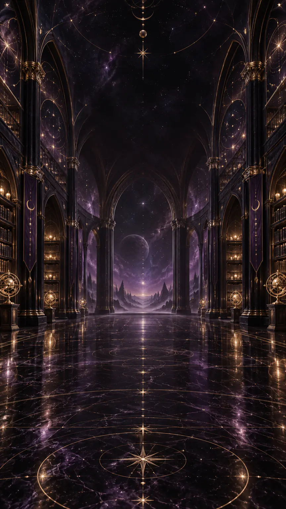

COMPLETE TAROT LIBRARY · ENGLISH
Meet all
78 Tarot cards
Search the canonical deck by name, family or symbolic theme. Each entry offers a concise upright note designed to open reflection—not to turn possibility into fate.

COMPLETE TAROT LIBRARY · ENGLISH
Search the canonical deck by name, family or symbolic theme. Each entry offers a concise upright note designed to open reflection—not to turn possibility into fate.

78 / 78
RESPONSIBLE STUDY
Describe what you can actually see before importing a memorized conclusion.
A card becomes more precise when it is connected to a real context and available choices.
Every upright card can express resources and excesses; upright does not mean “good”.
Translate insight into a question, boundary, conversation or small verifiable step.